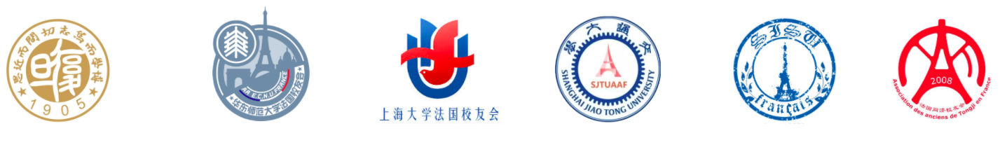
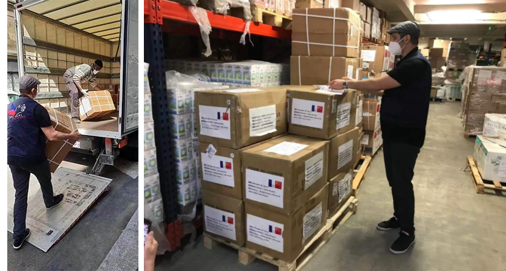
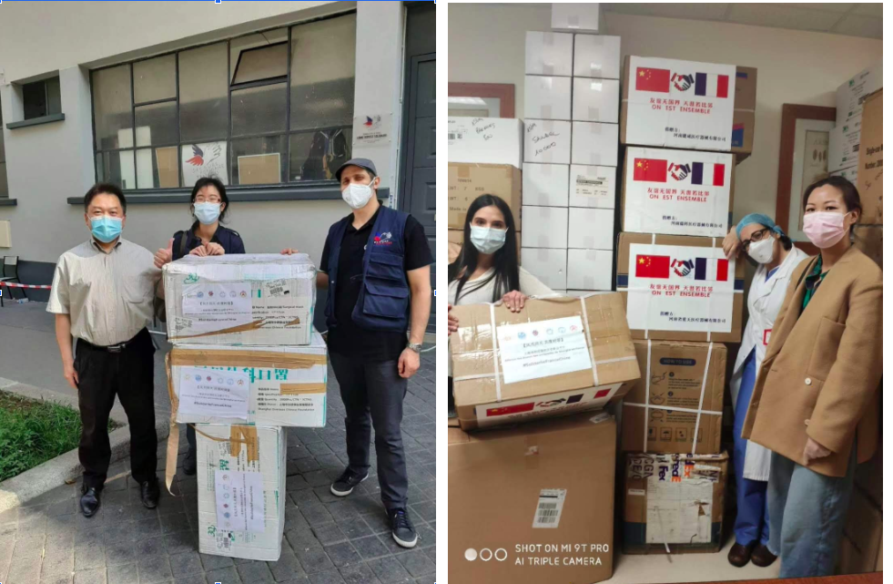
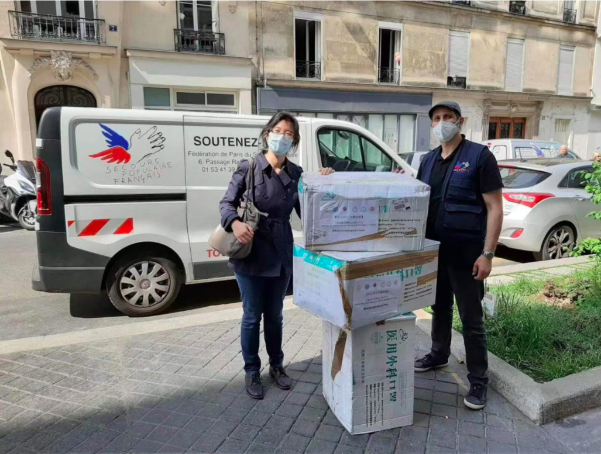
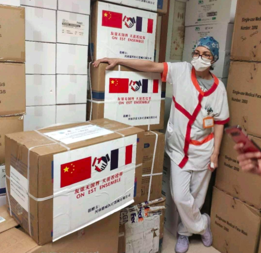

Environ 300 000 masques collectés par les associations chinoises pour lutter contre Covid-19 en France.
Affichant de très beaux sourires, les soignants se montrent plein d'enthousiasme avant de repartir en première ligne face au Covid-19.
Grâce à leurs efforts fantastiques, nous faisons reculer le virus, petit à petit. Ce relais d’amour, de solidarité, d’engagement et d’action va pouvoir continuer grâce au premier lot de 65 000 masques arrivé dans les 4 hôpitaux français. Il est le résultat d’une initiative lancée par le regroupement de six associations d’anciens élèves diplômés de grandes écoles françaises et d’universités chinoises prestigieuses, l’AAUSF*.

Six associations d’anciens élèves s’allient
Depuis quatre semaines, ces six associations d’anciens élèves s’allient afin de faire venir du matériel de première nécessité en France depuis la Chine et soutenir nos soignants.
Ces associations regroupent les élèves chinois et français ayant fait leurs études dans les grandes écoles d’ingénieur (eg. Ecole Polytechnique, Mines Paristech, Télécom Paristech, Arts et Métiers Paristech, Centrales, Ecole Normale Supérieur etc.) ou de commerce/science politique (eg. HEC, ESSEC, ESCP, Science Po etc.) ou d’autres meilleures écoles/universités françaises et représentent environ 2400 membres répartis entre la France ou la Chine.
Ce 20 avril, la première partie des dons collectés, comptant 65 000 masques chirurgicaux et 330 blouses de protection en provenance de Chine, fut enfin livrée par notre partenaire Secours Populaire Français Fédération de Paris aux groupes hospitaliers français. Nous faison aussi l’appel aux dons pour le Secours Populaire Français - Fédération de Paris, qui est un acteur active pour soutenir les soignants en première ligne et les gens vulnérables face à cette crise inédite.
Parmi ces combattants de première ligne figurent le SAMU de Paris, le CHU de Nantes, la commune de Deuil la barre et son Centre Territorial Ambulatoire de la ville et le CHU de Bicêtre, qui ont reçu le premier lot des masques et blouses de protection.
Plus de 250 000 autres pièces de protections médicales sont encore en transit et feront l’objet de dons ultérieurs dans les prochaines semaines.
Témoignage soignant
“
Notre 1er objectif a été de pouvoir aider en urgence, avec nos ressources, capacités et contrôle, les personnels soignants de quelques hôpitaux ciblés à lutter contre le covid-19 et nous avons bien réussi le pari : l’Alliance des Alumni des Universités de Shanghai en France est presque la seule plateforme proposant à ses donateurs une donation ciblée.
Pour obtenir le résultat escompté, nous nous sommes engagés avec beaucoup de conviction et d’efforts dans un contexte particulièrement difficile mélangeant des exigences d'approvisionnement, politique, médicale, logistique et juridique.
Aujourd'hui, quand nous avons vu les grandes sourires des soignants en 1ère ligne recevant nos masques et les mots d'encouragement de nos supporters, nous avons le profond sentiment que cela vaut vraiment la peine et nous donne la force de continuer.
”
- Sophie, Coordinatrice AAUSF* de cette initiative de solidarité
“
Quelle aventure! Au nom de toutes les équipes, 20000000 MERCIs pour tous vos efforts et votre organisation. Vous y êtes arrivés, nous y somme arrivés. Bravo. Félicitation et j’espère à bientôt. Solidairement.
”
- Fondation de dotation du CHU de Nantes
“
Tout d’abord, je vous en remercie au nom des soignants en première ligne pour l’effort de votre plateforme AAUSF qui nous permettrait de recevoir 330 blouses de protection.
”
- Na NA, médecin urgentiste, SAMU Paris
Les épreuves et les soutiens de nos partenaires
Logistiquement, de nombreux défis ont été rencontrés pour faire livrer ce matériel en France : contrôles très stricts de la qualité des masques; changement soudain des politiques douanières; réduction forte de la fréquence des vols Chine-France ou encore vol annulé à cause d’un pilote contaminé au Covid19.
Malgré ces épreuves, nous avons réussi à redonner le sourire à nos personnels soignants, ce qui a été rendu possible grâce aux dons et aux soutiens de nos partenaires, incluant le Secours Populaire Français - Fédération de Paris.
En tant que partenaire, Secours Populaire Français nous a aidé à :
Nous tenons à exprimer nos sincères remerciements au Secours Populaire Français - Fédération de Pairs pour leur geste de solidarité et leur grand professionnalisme.
La lutte étant loin d’être terminée, nous aimerions appeler nos donateurs à continuer d'encourager et de soutenir le Secours Populaire Français. Il participe non seulement à la lutte contre la crise épidémique de Covid-19, mais doit également assurer le maintien des missions traditionnelles telles que la distribution alimentaire, la domiciliation et les maraudes pour les personnes en situation difficile.
Pour faire un don:
https://www.helloasso.com/associations/secours-populaire-de-paris/formulaires/1/widget
Pour toute question ou suggestion, vous pouvez nous contacter par courriel : aausf.info@gmail.com
*L’AAUSF est constituée de 6 associations d’étudiants et anciens élèves, enregistrées aux préfectures en France sous la loi 1901 :

{kind=link}
Nos Partenaires
Shanghai Overseas Chinese Foundation
Fondation Hôpitaux de Paris - Hôpitaux de France
Secours Populaire Français
Art et Métiers Groupe
FOSUN Group
Ensemble France Chine
FTL Express
{kind=link}
Retour en images

{kind=link}

{kind=link}

{kind=link}

{kind=link}